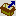

Export einer Package-Version
Über den Button  kann die im Baum ausgewählte Package-Version in eine Datei exportiert werden. Diese Datei kann anschließend in einem anderen Repository wieder importiert werden. Es wird folgender Dialog angezeigt:

Package File
Hier wird die Datei angegeben, in welche die Package-Version exportiert werden soll. Der Datei-Name wird automatisch mit dem Format <Datum_Package_Version> vorbelegt. Dieser sollte nach Möglichkeit nicht geändert werden.
Export Code
Es wird standardmäßig der Code exportiert. Der Code beinhaltet dabei sämtlichen Methoden-Code und auch den vom FrameworkCompiler generierten Code.
Include Base Packages
Wenn diese Checkbox gesetzt wird, dann wird ein Bereich eingeblendet, in dem angegeben werden kann, welche Basis-Packages mit in die Export-Datei gepackt werden sollen. Dies funktioniert auch bei importierten Basis-Packages. Im Vergleich zum Export der einzelnen Package-Versionen hat dieses Vorgehen den Vorteil, dass auf jeden Fall der passende Compile-Stand des Basis-Packages verwendet wird – auch wenn das Basis-Package später neu kompiliert wurde und dafür ein aktuellerer FrameworkCompiler-Stand zur Verfügung steht.
Im Bereich stehen zwei Radio-Buttons zur Auswahl:
Export Service Releases (standardmäßig vorbelegt)
Damit werden alle Package-Versionen ausgewählt, welche als SR exportiert werden können. Darunter zählen normale SR-Packages, aber auch sealed Packages, die davor mal im SR-Modus waren (sealed SR). Außerdem werden "Full Exporte" für offene Package-Versionen exportiert. Diese Auswahl bedingt, dass im Ziel-Repository bereits ein aktueller Stand des Basis-Packages importiert wurde.
Export Full Packages
Damit wird für alle Packages ein Full Export ausgewählt. Diese Auswahl ist sinnvoll, wenn die Package-Version erstmalig zum Ziel-Repository übertragen werden soll.
Bei Bedarf können auch gezielt weitere Packages ausgewählt werden. Bei Package-Versionen, die als Service-Release exportiert werden können, kann mit der Checkbox Export Full Package statt dem Service-Release-Paket die komplette Package-Version eingebunden werden.
Beim Package-Import werden automatisch alle in der Export-Datei beinhalteten Packages importiert – die Auswahl kann nur beim Export getroffen werden. Bei Service-Releases erfolgt ein Import nur dann, wenn nicht bereits ein aktuellerer Service-Release-Stand vorhanden ist.
Note
Ein neues Repository kann mit so einer Export-Datei nicht angelegt werden. Dies ist nur mit dem Export des Default-Packages möglich.